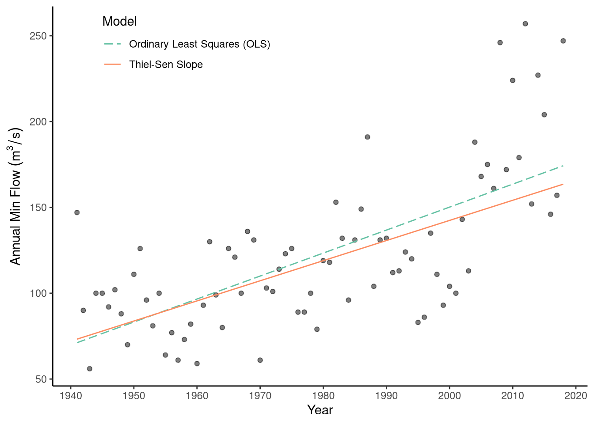
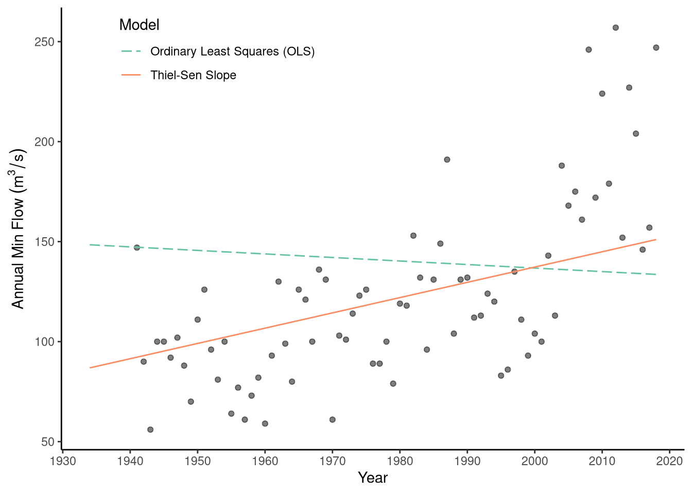

First we must load the data. Consider the same data as Worked Example 7.1 using annual minimum flow from the Göta River beginning in 1941.
library(tidyverse)
library(hydroDrought)
library(lubridate)
#require(Hmisc)
require(zyp)
### Filter to the rivers and create columns for dates
flow_df <- international %>%
filter(river == "Gota") %>%
dplyr::select(river, data) %>%
unnest(cols = data) %>%
mutate(
year = year(time),
jdate = yday(time)
) %>%
print()## # A tibble: 61,498 x 5
## river time discharge year jdate
## <chr> <date> <dbl> <dbl> <dbl>
## 1 Gota 1850-01-01 506 1850 1
## 2 Gota 1850-01-02 506 1850 2
## 3 Gota 1850-01-03 502 1850 3
## 4 Gota 1850-01-04 502 1850 4
## 5 Gota 1850-01-05 502 1850 5
## 6 Gota 1850-01-06 502 1850 6
## 7 Gota 1850-01-07 496 1850 7
## 8 Gota 1850-01-08 496 1850 8
## 9 Gota 1850-01-09 496 1850 9
## 10 Gota 1850-01-10 496 1850 10
## # … with 61,488 more rows### Group by year and river and then calculate min annual flow
flow_annual <- flow_df %>%
group_by(river, year) %>%
summarise(min_m3s = min(discharge, na.rm=TRUE), .groups = "drop_last") %>%
print() %>%
ungroup()## # A tibble: 169 x 3
## # Groups: river [1]
## river year min_m3s
## <chr> <dbl> <dbl>
## 1 Gota 1850 471
## 2 Gota 1851 500
## 3 Gota 1852 565
## 4 Gota 1853 591
## 5 Gota 1854 347
## 6 Gota 1855 316
## 7 Gota 1856 366
## 8 Gota 1857 401
## 9 Gota 1858 316
## 10 Gota 1859 310
## # … with 159 more rows### Subset to 1941 and after
flow_annual_subset <- flow_annual %>% filter( year >= 1941)
### Run the Mann-Kendall Test for the annual min flow
mk_test_results <- Kendall(x=flow_annual_subset$year, y=flow_annual_subset$min_m3s)
summary(mk_test_results)## Score = 1426 , Var(Score) = 53676.67
## denominator = 2988.465
## tau = 0.477, 2-sided pvalue =< 2.22e-16The Mann-Kendall test produces an S value of 1426, derived by calculating the difference between 2200 positive pairs (73.3%) and 774 negative pairs (25.8%) out of 3003 possible data pairs (29 pairs had equal values). Using this test statistic and the 78 years of observations, the Mann-Kendall test produces a p-value of < 1x10-15 suggesting there is a statistically significant increase in annual minimum flow during this period. This finding agrees with our linear regression trend test (Section 7.4.1), though with slightly less confidence because we gave up some statistical power for the flexibility of a non-parametric test.
As discussed earlier (Section 7.4.2), the Mann-Kendall test only considers increases/decreases and does not estimate the magnitude of the underlying trend. For this, we must calculate the Theil-Sen non-parametric line. When compared to the OLS estimate (Fig. 7.10) the Theil-Sen line shows very similar results (1.02 m3 s-1 per year), but is slightly less affected by relatively high outliers during the late 2000s.
### Run the Theil-Sen slope for annual min flow
sen_slope_results <- zyp.sen(min_m3s ~ year, data = flow_annual_subset)
sen_slope_results##
## Call:
## NULL
##
## Coefficients:
## Intercept year
## -2202.414 1.172confint.zyp(sen_slope_results)## 0.025 0.975
## Intercept -2263.3510083 -2132.799301
## year 0.8387097 1.553571### Rerun OLS trend
gota_lm <- lm(min_m3s~year, data = flow_annual_subset)
### Combine for plotting purposes
trend_lines <- flow_annual_subset %>%
select(year) %>% ### Only select the year
mutate( ### Create two new columns with predictions
ols = gota_lm$coef[1] + gota_lm$coef[2] * year,
sen = sen_slope_results$coef[1] + sen_slope_results$coef[2] * year
) %>%
gather(model, min_m3s, -year) ### Gather these predictions into a long format for plotting
### Re-factor the model names to make it better to plot
trend_lines$model <- factor(trend_lines$model, c("ols", "sen"), labels=c("Ordinary Least Squares (OLS)", "Thiel-Sen Slope"))Figure 7.10: Comparison of non-parametric (Theil-Sen) trend with parametric (OLS) trend for annual minimum flows on the Gota river after 1940.
If we instead expand the Göta River time series to begin in 1934, we introduce three high leverage outliers during the late 1930s. Here, the robustness of the Theil-Sen line is more apparent.
### Subset to 1934 and after
flow_annual_longer <- flow_annual %>% filter( year >= 1934)
### Run the Mann-Kendall Test for the annual min flow
mk_longer <- Kendall(x=flow_annual_longer$year, y=flow_annual_longer$min_m3s)
summary(mk_longer)## Score = 921 , Var(Score) = 69373
## denominator = 3555.47
## tau = 0.259, 2-sided pvalue =0.00047767### Run the Theil-Sen slope for annual min flow
sen_slope_longer <- zyp.sen(min_m3s ~ year, data = flow_annual_longer)
sen_slope_longer##
## Call:
## NULL
##
## Coefficients:
## Intercept year
## -1390.5720 0.7639confint.zyp(sen_slope_longer)## 0.025 0.975
## Intercept -1545.8315356 -1191.203759
## year 0.3676471 1.142857### Rerun OLS trend
gota_lm_longer <- lm(min_m3s~year, data = flow_annual_longer)
summary(gota_lm_longer)##
## Call:
## lm(formula = min_m3s ~ year, data = flow_annual_longer)
##
## Residuals:
## Min 1Q Median 3Q Max
## -90.84 -46.66 -21.78 13.05 423.93
##
## Coefficients:
## Estimate Std. Error t value Pr(>|t|)
## (Intercept) 489.7563 768.4614 0.637 0.526
## year -0.1765 0.3889 -0.454 0.651
##
## Residual standard error: 87.96 on 83 degrees of freedom
## Multiple R-squared: 0.002476, Adjusted R-squared: -0.009543
## F-statistic: 0.206 on 1 and 83 DF, p-value: 0.6511By including only 6 additional years, the OLS line changes from a significantly positive trend (+1.23 m3 s-1per year) to a significantly negative trend (-0.35 m3 s-1per year). The Theil-Sen line is barely affected by these outliers, instead capturing the 70-year increasing trend.
This is an extreme example and we know from Section 7.2.3 that these outliers are related to a change in lake management. Data before 1940 follows a different underlying distribution, violating the assumptions of our model (Fig. 7.11). To prove this, read ahead to Section 7.4.3.
### Combine for plotting purposes
trend_lines <- flow_annual_longer %>%
select(year) %>% ### Only select the year
mutate( ### Create two new columns with predictions
ols = gota_lm_longer$coef[1] + gota_lm_longer$coef[2] * year,
sen = sen_slope_longer$coef[1] + sen_slope_longer$coef[2] * year
) %>%
gather(model, min_m3s, -year) ### Gather these predictions into a long format for plotting
### Re-factor the model names to make it better to plot
trend_lines$model <- factor(trend_lines$model, c("ols", "sen"), labels=c("Ordinary Least Squares (OLS)", "Thiel-Sen Slope"))Figure 7.11: Comparison of non-parametric (Theil-Sen) trend with parametric (OLS) trend for annual minimum flows on the Gota river by incorrectly including data from 1934 (prior to dam regulation).
